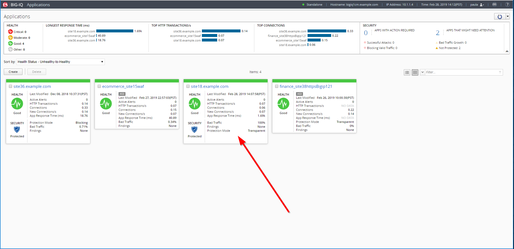
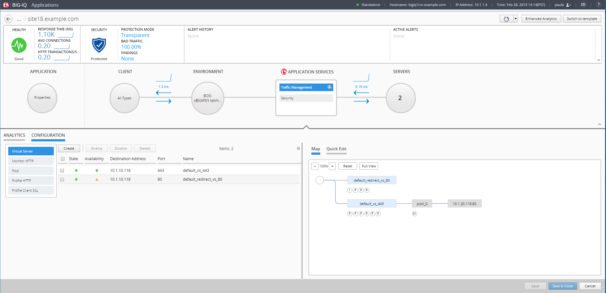
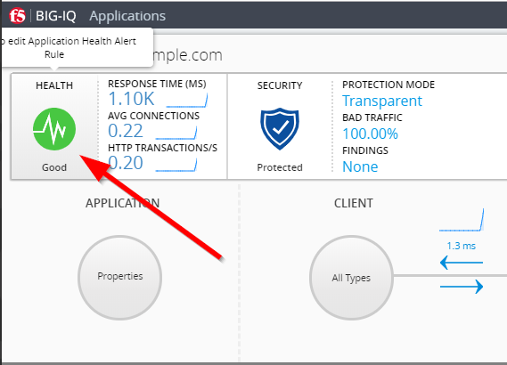

F5 BIG-IQ & Cloud Edition Lab > Class 1: BIG-IQ Application Management and AS3 (Cloud Edition) > Module 2: BIG-IQ Application Templates & Deployment (Service Catalog) Source | Edit on
Lab 2.3: Create Application using Service Catalog Template¶
Warning
Starting BIG-IQ 6.1, AS3 should be the preferred method to deploy application services through BIG-IQ.
Connect as paula to create a new application, and click on Create, select the template previously created f5-HTTPS-WAF-lb-template-custom1.
Type in a Name for the application you are creating.
Application Name:
site18.example.com
To help identify this application when you want to use it later, in the Description field, type in a brief description for the application you are creating.
Description:
My First Application on F5 Cloud Edition
Type the domain of your application (then the ASM policy will always be transparent for this domain)
Domain Names:
site18.example.com
For Device, select the name of the device you want to deploy this application to. (if the HTTP statistics are not enabled, they can be enabled later on after the application is deployed)
BIG-IP: Select
BOS-vBIGIP01.termmarc.comand checkCollect HTTP Statistics

Determine the objects that you want to deploy in this application. To omit any of the objects defined in this template, click the (X) icon that corresponds to that object. To create additional copies of any of the objects defined in this template, click the (+) icon that corresponds to that object.
In the example, fill out the Server’s IP addresses/ports (nodes) and virtual servers names, IPs and ports.
Servers (Pool Member):
10.1.20.118and10.1.20.119Service Port:
80
Note
Nodes and pool members are “device specific objects”
Name WAF & LB (Virtual Server):
vs_site18.example.com_httpsDestination Address:
10.1.10.118Destination Network Mask:
255.255.255.255Service Port:
443Name HTTP Redirect (Virtual Server):
vs_site18.example.com_redirectDestination Address:
10.1.10.118Destination Network Mask:
255.255.255.255Service Port:
80
{kind=link}
Then Click on Create (bottom right of the window). The Application is deployed.

Note
In case the Application fails, connect as david (or marco) and go to Applications > Application Deployments to have more details on the failure. You try retry in case of failure.
Note
You can tail the logs: /var/log/restjavad.0.log
In Paula’s Dashboard, she can see her Application.
{kind=link}
Click on the Application and check the details (alarms, security enabled, configuration, …)

Click on Traffic Management > Configuration
{kind=link}
Note
A traffic generator located on the Ubuntu Lamp Server server, is sending good traffic every minute to the virtual servers.
Paula can update Application Health Alert Rules by clicking on the Health Icon on the top left of the Application Dashboard.
{kind=link}